hai selamat datang di office website dari server enjoyers smp, tekan tombol join untuk bergabung ke server, and enjoy!!
about
hai selamat datang di office website dari server enjoyers smp, tekan tombol join untuk bergabung ke server, and enjoy!!